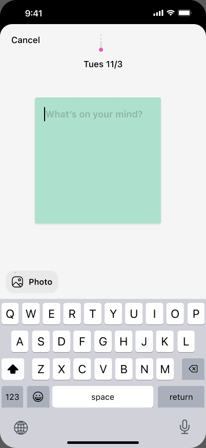
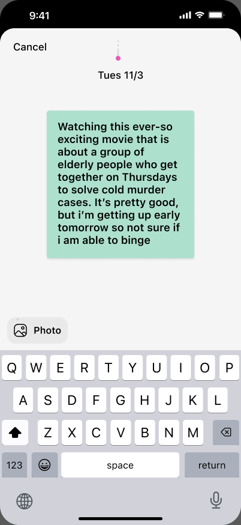
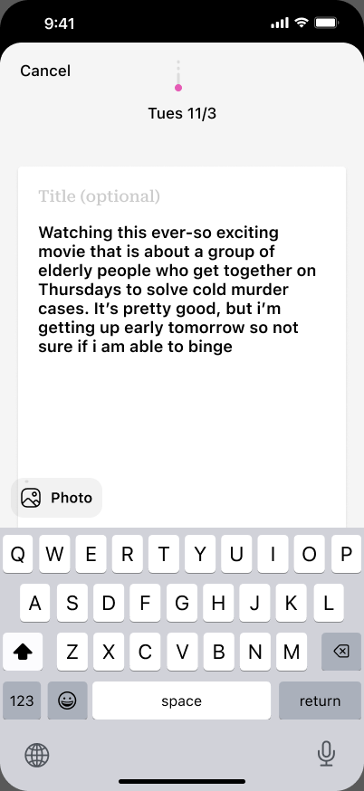

0 chars
Tues 11/3
B2 lifts the paper like you picked it up. B4 unfolds it like a folded note. The first two phones are those originals for reference. Phones 1 to 3 blend them with different weights: an even mix, lift-led, and crease-led. Try ½ or ¼ speed to see where the lift ends and the unfold begins.

v1 · empty sticky
v2 · sticky grows
v3 · white page + title